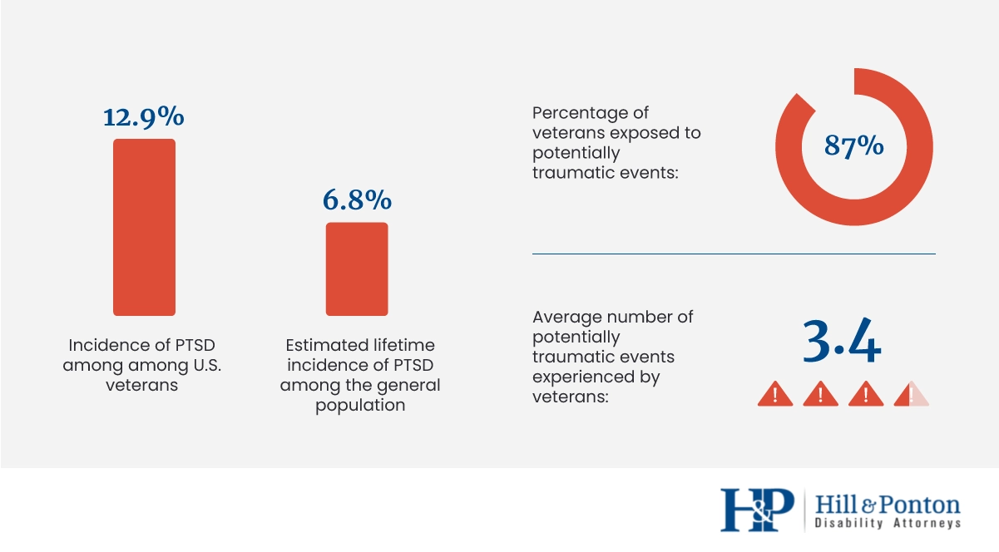

 This graph from Hill and Ponton is the perfect example of the impact of war on soldiers who participate in them. Now these percentages may not seem as much but lets take a look at the numbers themselves. According to Statista, in 2019 there were more than 17 million veterans in the United States. With that in perspective we can do the math. Roughly 2.2 million veterans have suffered from PTSD from the events they've endured while on work. Out of those 150k veterans suffer it for a lifetime. 150k people will never get over the trauma created by Wars. But the most alarming facts from those graphs are the fact that 14.8 million veterans are exposed to traumatic events and on average veterans endure 3.4 traumatic events in their lifetime. That is only counting the US, imagine adding to that tall the war veterans for other countries. It is also important to note the relationships created while being deployed and the pain of seeing those close to you die in the battlefield is a sentiment a lot of people in the military know all too well.
The term deserter is attributed to a soldier who abandoned his position without authorization therefore deserting the position (empty space). It's often attrbuted to people who perform this action during war in order to avoid a hazardous activity. The reasons why a veteran would desert his or her position may vary but the punishment if caught more often than not is the same. The usual punishment for a deserter during a war is death. In Japan, during World War 2 they used a group soldiers and broke them mentally in an effort to convince them to die for "their country", that group would fly planes that weren't given enough fuel to return because they were expected to crash the plane into whoever was considered their enemy, they were called kamikazes. Some Kamikaze pilots understandably didn't want to give away their life and ended up becoming deserters. If a deserter returned to Japan they would undergo harsh punishements and bring dishonor to their family but they wouldn't escape their fate that easily because after receving physical or mental punishment they would be forced to carry out the mission as many as 8 more times, they would not be executed unless they desert for a 9th time. While they are sworn into their duty there are aspects that veterans aren't prepared for, it's not the same reading an article on how many people died during a war in x country than actually seeing how those people died, that's what veterans experience and that experience weighs heavy on their conscious. The pain of knowing what has been done becomes too much to bear and some of them end up becoming deserters because of it. That's just one valid reason to become a deserter, there are plenty more. However those reasons are discarded by people because whatever the reason may be they are still a "deserter".
War is costly. But people underrate the severity of the damage done to the economy of a country because of war. The cost of repairs after the war is over, the veterans who participated, the families of the veterans who couldn't make it, shelter for the people who lost their homes and so much more impacts the economy in a way that could be detrimental for the nation affected if not addresed quickly and even if it is addressed quickly there is no guarantee of a quick recovery. Some may not even recover at all. The winners and losers of war experience this , without exceptions. The majority of wars end up costing billions. That generates frustration between the citizens since they are left in a poor state as the debt continues to rise in the country and people attempt to recover from the devastation of war.